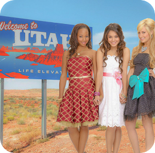
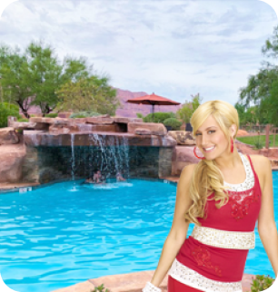

Utah
Você conhece as músicas como se você soubesse seu próprio nome ou ainda tem uma leve queda por Zac Efron, mesmo que não admita. Agora é hora de planejar uma viagem aos locais icônicos de Utah, onde a franquia de filmes "High School Musical" foram filmados.
Pontos Turísticos
East High School
840 S 1300 E, Salt Lake City, UT 84102, Estados Unidos
Sobre: Experimente ser um Wildcat através de um passeio pelo escola secundária onde foi filmada a trilogia de High School Musical. O elenco cantou “Stick to the Status Quo” no refeitório e Troy levou os Wildcats à vitória no ginásio. Os armários da Sharpay ainda são pintados de rosa até hoje.
Valor do Ingresso: Gratuito
Duração: Livre
Horário de Funcionamento: À partir das 14h30min
Melhor época para visitar: Verão

The Inn at Entrada
2537 Entrada Trail, St. George, UT 84770, Estados Unidos
Sobre: Em High School Musical 2 vemos as férias dos Wildcats trabalhando no Country Club da família de Sharpay. The Inn at Entrada o restort onde é possível relaxar e conhecer o campo onde Troy deu aulas de Golf e a linda piscina onde a Gabriela utilizava para dar aulas de natação.
Valor do Ingresso: 330 dólares
Duração: 7h às 21h
Horário de Funcionamento: 8h às 18h30min
Melhor época para visitar: Entre a primavera e o verão.